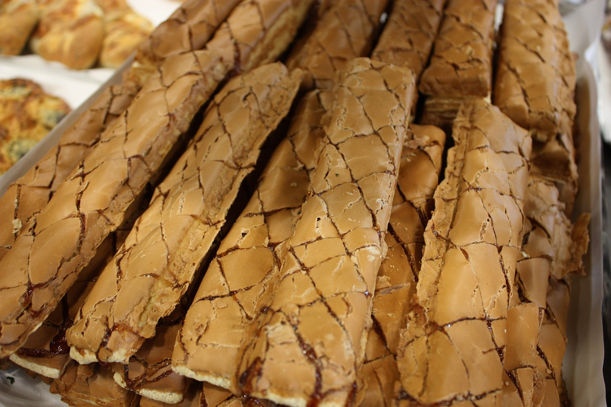

이탈리아의 스폴리아띠네 글라사떼(sfogliatine glassate)라는 퍼프 페이스트리 위에 머랭을 바르고 살구 잼을 짜서 선을 그리고 구운 과자. 원래 삼립식품의 상표였는데, 오늘날 한국에서 이런 종류의 과자는 제조원을 막론하고 어디서든지 누네띠네라고 부르고 있다. 위쪽에 있는 묘하게 바삭거리는 달달한 머랭이 일품. 오뚜기와 더불어 교과서에 국어파괴의 예 중 하나로 적잖게 등장하는 과자. 그런데 고유명사라 뭐라고 할 것까지는 없고, 오뚜기와는 달리 이거 때문에 국어 헷갈리는 사람은 아무도 없어서 별로 신경 안 쓴다. 보통명사가 된 고유명사들에 해당되는 사례.